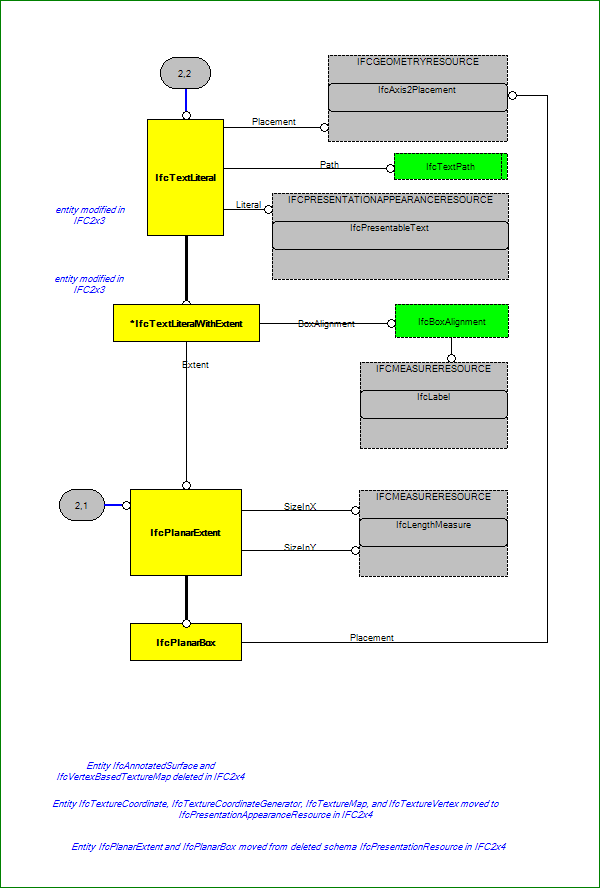

IfcPresentationDefinitionResource (2/2)


 IfcPresentationDefinitionResource (2/2) IfcPresentationDefinitionResource (2/2)
IfcPresentationDefinitionResource (2/2) IfcPresentationDefinitionResource (2/2)